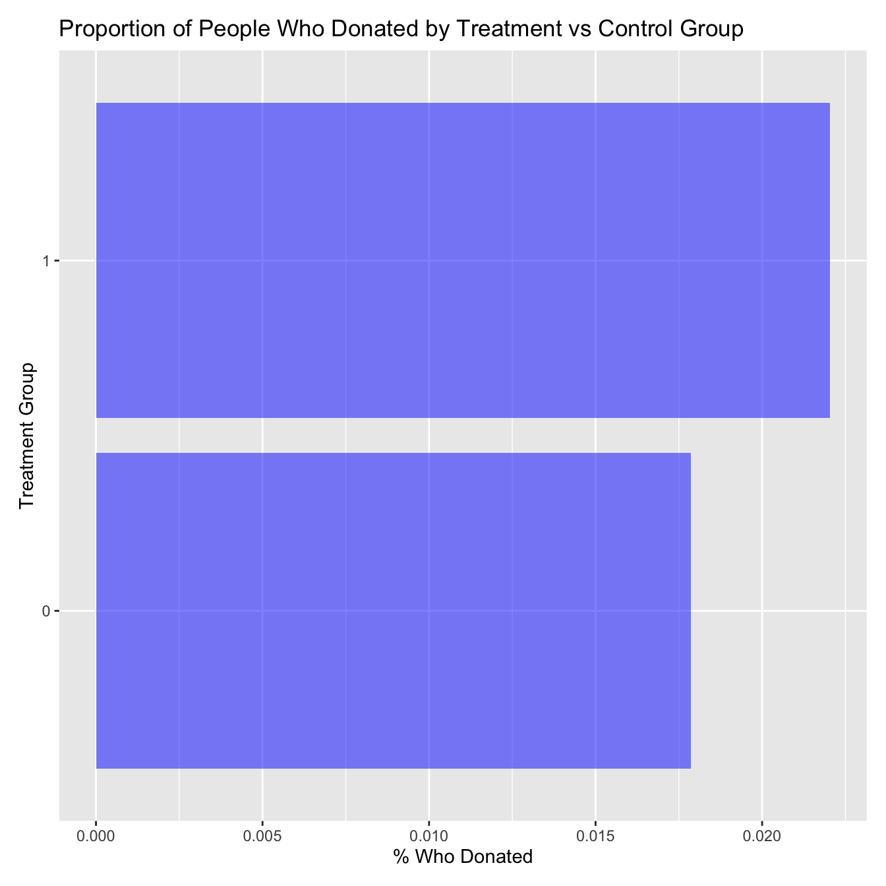
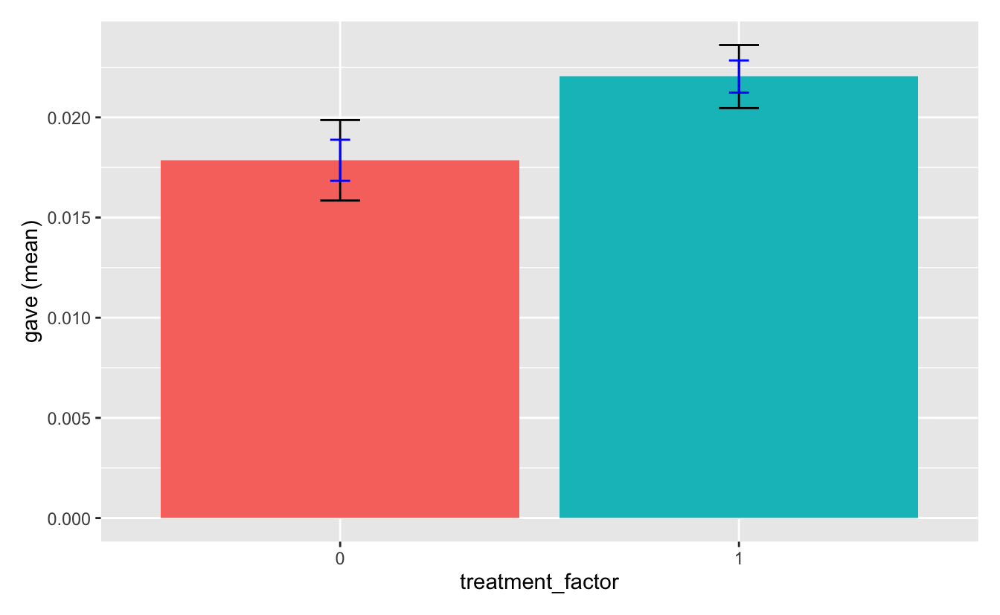
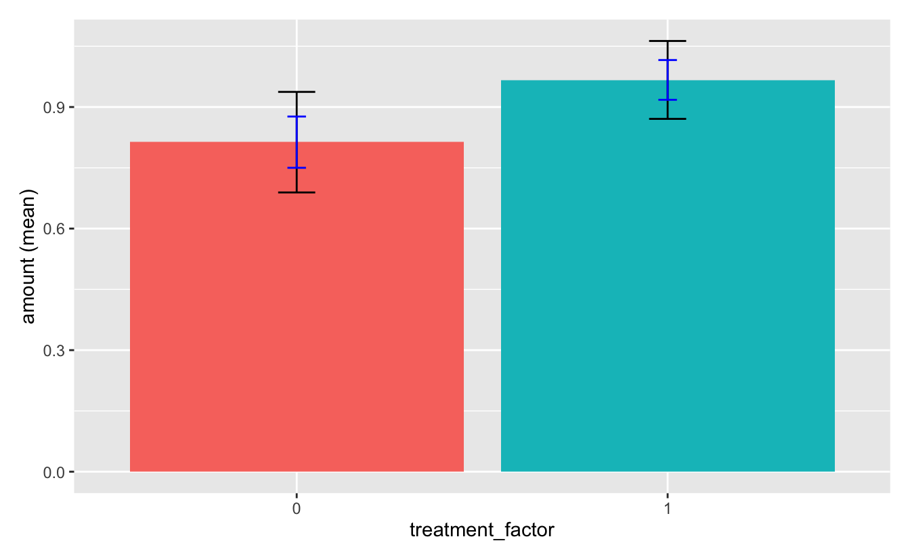
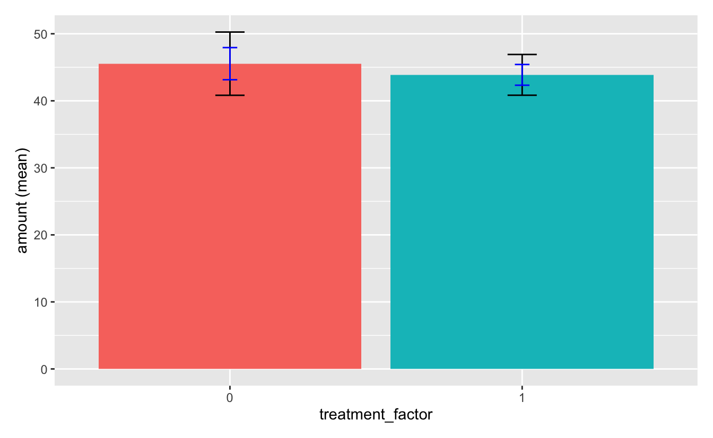
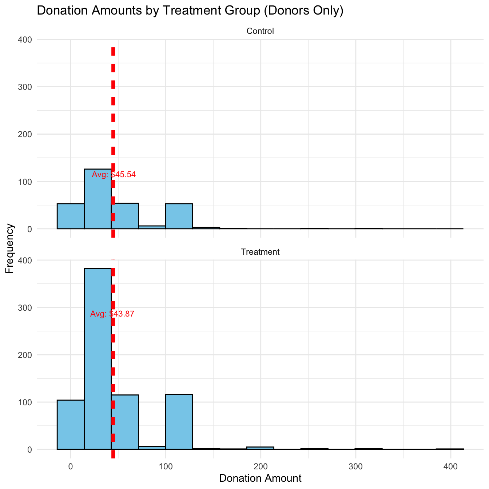
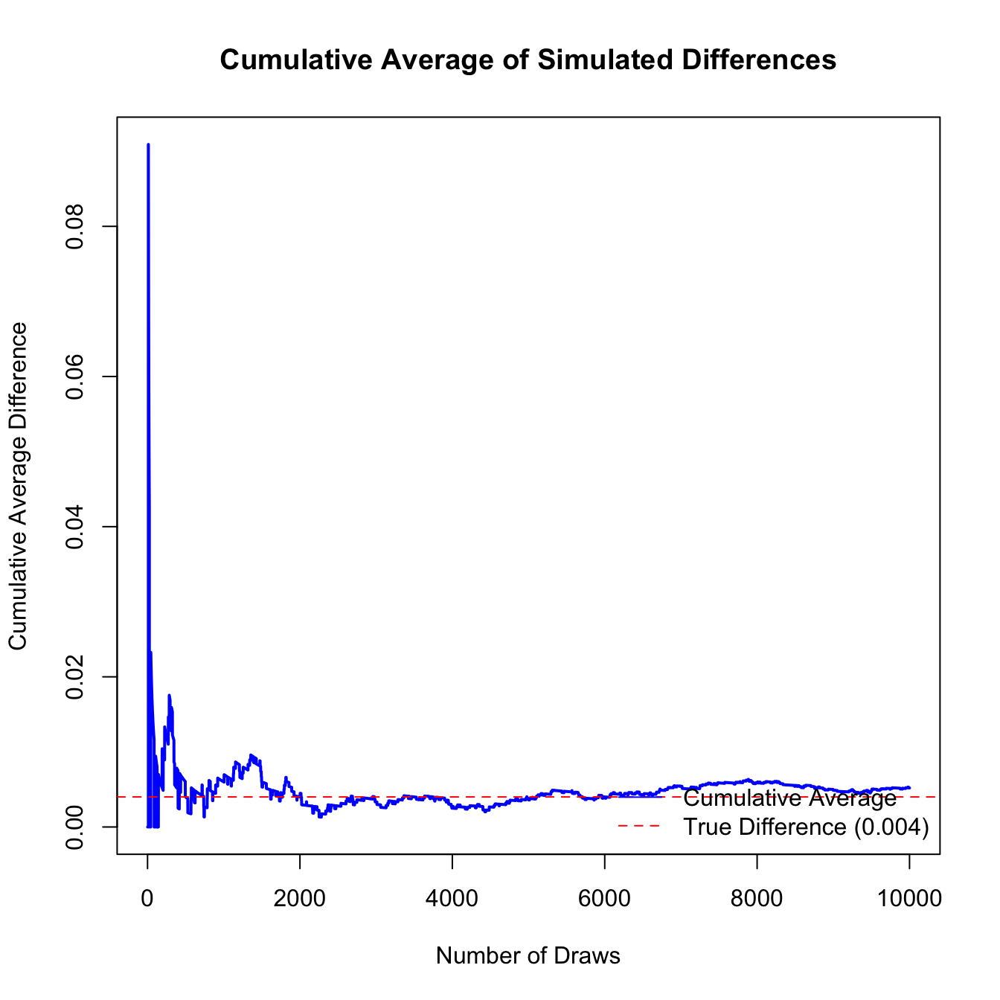
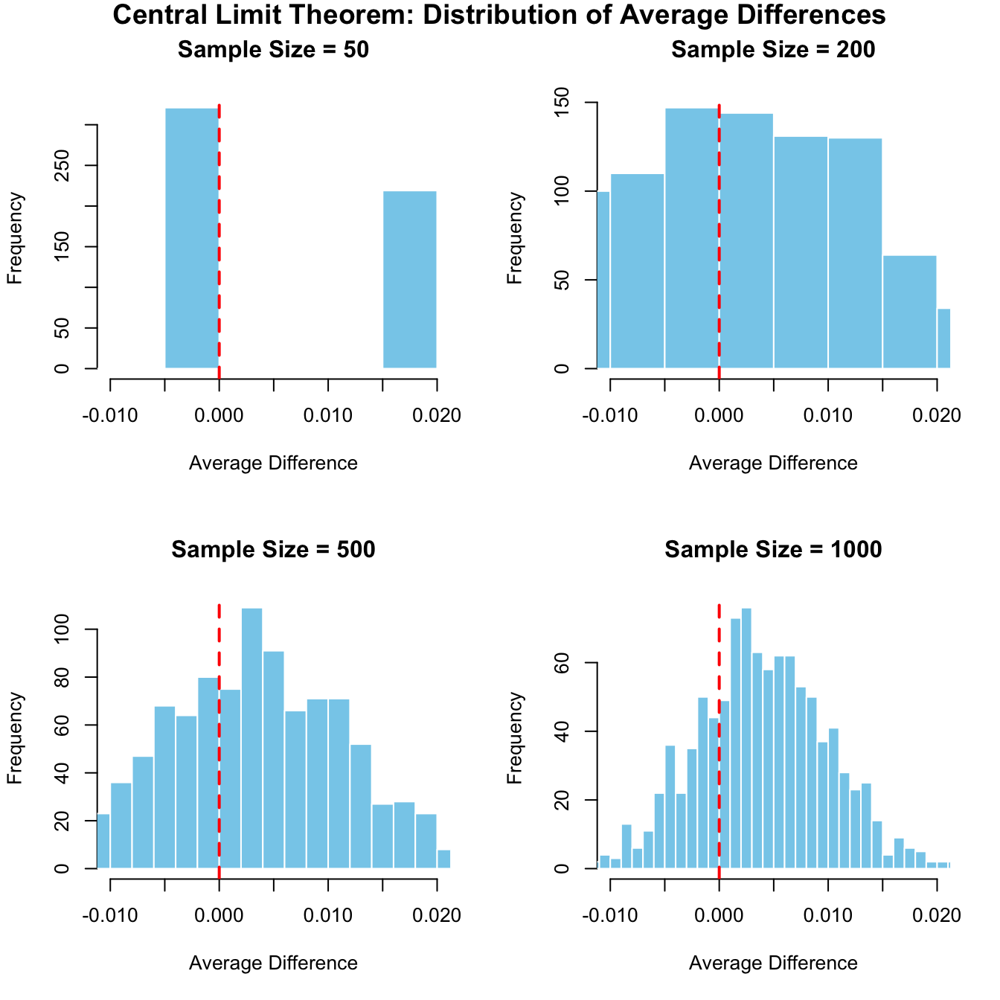

Pairwise mean comparisons (t-test)
Data : r_data[["karlan_list_2007_rl"]]
Variables : treatment_factor, dormant
Samples : independent
Confidence: 0.95
Adjustment: None
treatment_factor mean n n_missing sd se me
0 0.523 16,687 0 0.499 0.004 0.008
1 0.524 33,396 0 0.499 0.003 0.005
Null hyp. Alt. hyp. diff p.value se t.value df 2.5% 97.5%
0 = 1 0 not equal to 1 -0.001 0.862 0.006 -0.174 33362.05 -0.01 0.008
Signif. codes: 0 '***' 0.001 '**' 0.01 '*' 0.05 '.' 0.1 ' ' 1A Replication of Karlan and List (2007)
Introduction
Dean Karlan at Yale and John List at the University of Chicago conducted a field experiment to test the effectiveness of different fundraising letters. They sent out 50,000 fundraising letters to potential donors, randomly assigning each letter to one of three treatments: a standard letter, a matching grant letter, or a challenge grant letter. They published the results of this experiment in the American Economic Review in 2007. The article and supporting data are available from the AEA website and from Innovations for Poverty Action as part of Harvard’s Dataverse.
In this large-scale natural field experiment, the researchers partnered with a well-known nonprofit organization to test whether matching donations would increase both the likelihood of giving and the amount given. The experiment used a randomized controlled design, with some donors receiving a standard solicitation letter, while others received a letter indicating that their donation would be matched by a major donor at either a 1:1, 2:1, or 3:1 ratio. The randomized assignment allowed the authors to estimate causal effects of these treatments on charitable behavior by comparing response rates and donation amounts across the different groups. The primary outcomes measured were whether a donation was made and, conditional on giving, how much was donated.
This project seeks to replicate their results by conducting a structured analysis of the original dataset. We begin by verifying the integrity of the experimental design through checks for proper randomization across treatment groups. Next, we conduct a series of descriptive and inferential statistical analyses to examine how donation behavior varies by treatment group and match ratio. These analyses include t-tests, regression models, and simulation-based visualizations to confirm both the authors original findings.
Data
Description
The dataset consists of 50,083 individual observations, each representing a potential donor who received one of the fundraising letters. It includes 52 variables encompassing a range of data types. These variables fall into several categories: treatment assignment (e.g., standard vs. matching letter, and the level of the match ratio: 1:1, 2:1, or 3:1), demographic characteristics (such as gender, household size, and income estimates), past donation behavior (including donation frequency and recency), and outcome measures indicating whether a donation was made and the amount donated. This dataset enables us to analyze how different strategies and characteristics influence charitable giving through randomized A/B testing.
Balance Test
As an ad hoc test of the randomization mechanism, I provide a series of tests that compare aspects of the treatment and control groups to assess whether they are statistically significantly different from one another.
To validate the randomization of the experimental design and ensure there was no systematic bias between the treatment and control groups, I conducted a series of balance tests using both t-tests and bivariate linear regressions. I selected three representative variables that reflect a range of relevant dimensions: dormant, a binary variable indicating whether a person had made a donation in 2005 (capturing past donation tendencies); pblack, the proportion of Black residents in a donor’s ZIP code (representing demographic composition); and median_hhincome, the median household income within the ZIP code (reflecting affluence). These variables were chosen to ensure the sample was balanced across behavioral, demographic, and socioeconomic dimensions. In each case, the tests revealed statistically insignificant p-values when comparing the treatment and control groups, indicating no meaningful differences between groups. These results provide strong support for the integrity of the random assignment process used in the original experiment.
Balance Test - Variable #1 - “dormant”
T-Test
Regression
Linear regression (OLS)
Data : r_data[["karlan_list_2007_rl"]]
Response variable : dormant
Explanatory variables: treatment_factor
Null hyp.: the effect of treatment_factor on dormant is zero
Alt. hyp.: the effect of treatment_factor on dormant is not zero
coefficient std.error t.value p.value
(Intercept) 0.523 0.004 135.247 < .001 ***
treatment_factor|1 0.001 0.005 0.174 0.862
Signif. codes: 0 '***' 0.001 '**' 0.01 '*' 0.05 '.' 0.1 ' ' 1
R-squared: 0, Adjusted R-squared: 0
F-statistic: 0.03 df(1,50081), p.value 0.862
Nr obs: 50,083 Balance Test - Variable #2 - “pblack”
T-Test
Pairwise mean comparisons (t-test)
Data : r_data[["karlan_list_2007_rl"]]
Variables : treatment_factor, pblack
Samples : independent
Confidence: 0.95
Adjustment: None
treatment_factor mean n n_missing sd se me
0 0.087 16,687 698 0.137 0.001 0.002
1 0.087 33,396 1,338 0.135 0.001 0.001
Null hyp. Alt. hyp. diff p.value se t.value df 2.5% 97.5%
0 = 1 0 not equal to 1 0 0.922 0 -0.098 31555.78 -0.003 0.002
Signif. codes: 0 '***' 0.001 '**' 0.01 '*' 0.05 '.' 0.1 ' ' 1Regression
Linear regression (OLS)
Data : r_data[["karlan_list_2007_rl"]]
Response variable : pblack
Explanatory variables: treatment_factor
Null hyp.: the effect of treatment_factor on pblack is zero
Alt. hyp.: the effect of treatment_factor on pblack is not zero
coefficient std.error t.value p.value
(Intercept) 0.087 0.001 80.617 < .001 ***
treatment_factor|1 0.000 0.001 0.098 0.922
Signif. codes: 0 '***' 0.001 '**' 0.01 '*' 0.05 '.' 0.1 ' ' 1
R-squared: 0, Adjusted R-squared: 0
F-statistic: 0.01 df(1,48045), p.value 0.922
Nr obs: 48,047 Balance Test - Variable #3 - “median_hhincome”
T-Test
Pairwise mean comparisons (t-test)
Data : r_data[["karlan_list_2007_rl"]]
Variables : treatment_factor, median_hhincome
Samples : independent
Confidence: 0.95
Adjustment: None
treatment_factor mean n n_missing sd se me
0 54,921.094 16,687 651 21,932.012 173.193 339.477
1 54,763.169 33,396 1,223 22,074.818 123.070 241.221
Null hyp. Alt. hyp. diff p.value se t.value df 2.5% 97.5%
0 = 1 0 not equal to 1 157.925 0.457 212.466 0.743 32222.13 -258.517 574.368
Signif. codes: 0 '***' 0.001 '**' 0.01 '*' 0.05 '.' 0.1 ' ' 1Regression
Linear regression (OLS)
Data : r_data[["karlan_list_2007_rl"]]
Response variable : median_hhincome
Explanatory variables: treatment_factor
Null hyp.: the effect of treatment_factor on median_hhincome is zero
Alt. hyp.: the effect of treatment_factor on median_hhincome is not zero
coefficient std.error t.value p.value
(Intercept) 54921.094 173.946 315.736 < .001 ***
treatment_factor|1 -157.925 212.929 -0.742 0.458
Signif. codes: 0 '***' 0.001 '**' 0.01 '*' 0.05 '.' 0.1 ' ' 1
R-squared: 0, Adjusted R-squared: 0
F-statistic: 0.55 df(1,48207), p.value 0.458
Nr obs: 48,209 Experimental Results
Charitable Contribution Made
First, I analyze whether matched donations lead to an increased response rate of making a donation.
In the bar chart below, you will see the proportion of people who donated for the control group (0) and for the treatment group (1).18% of the people om the control group, i.e. not match offered, donated. While 22% of the people in the treatment group, offered a donation match, donated. Furthermore, this difference in whether they donated based on which group they were in is statically significant (p value = .002) as reflected in both the T-Test and Linear Regression. I also ran a Probit Regression which resulted in a positive co-efficient for the treatment group and a statistically significant p-value, meaning that people in the treatment groupu were more liekly to donate than those in the control group.
Proportion of People Who Donated by Treatment vs Control Group

Donated by Treatment vs Control Group - T-Test
Pairwise mean comparisons (t-test)
Data : r_data[["karlan_list_2007_rl"]]
Variables : treatment_factor, gave
Samples : independent
Confidence: 0.95
Adjustment: None
treatment_factor mean n n_missing sd se me
0 0.018 16,687 0 0.132 0.001 0.002
1 0.022 33,396 0 0.147 0.001 0.002
Null hyp. Alt. hyp. diff p.value se t.value df 2.5% 97.5%
0 = 1 0 not equal to 1 -0.004 0.001 0.001 -3.209 36576.84 -0.007 -0.002 **
Signif. codes: 0 '***' 0.001 '**' 0.01 '*' 0.05 '.' 0.1 ' ' 1
Donated by Treatment vs Control Group - Linear Regression
Linear regression (OLS)
Data : r_data[["karlan_list_2007_rl"]]
Response variable : gave
Explanatory variables: treatment_factor
Null hyp.: the effect of treatment_factor on gave is zero
Alt. hyp.: the effect of treatment_factor on gave is not zero
coefficient std.error t.value p.value
(Intercept) 0.018 0.001 16.225 < .001 ***
treatment_factor|1 0.004 0.001 3.101 0.002 **
Signif. codes: 0 '***' 0.001 '**' 0.01 '*' 0.05 '.' 0.1 ' ' 1
R-squared: 0, Adjusted R-squared: 0
F-statistic: 9.618 df(1,50081), p.value 0.002
Nr obs: 50,083 Donated by Treatment vs Control Group - Probit Regression
Call:
glm(formula = gave ~ treatment, family = binomial(link = "probit"),
data = r_data[["karlan_list_2007_rl"]])
Coefficients:
Estimate Std. Error z value Pr(>|z|)
(Intercept) -2.10014 0.02332 -90.074 < 0.0000000000000002 ***
treatment 0.08678 0.02788 3.113 0.00185 **
---
Signif. codes: 0 '***' 0.001 '**' 0.01 '*' 0.05 '.' 0.1 ' ' 1
(Dispersion parameter for binomial family taken to be 1)
Null deviance: 10071 on 50082 degrees of freedom
Residual deviance: 10061 on 50081 degrees of freedom
AIC: 10065
Number of Fisher Scoring iterations: 6Differences between Match Rates
Next, I assesed the effectiveness of different sizes of matched donations on the response rate.
In this exercise, the goal is to see whether there is an significant impact on whether people donate based on the donation match offer they were provided (1:1, 2:1, or 3:1). For that reason, the data that is relevant is only the people that are in the Treatment group, so the Control group is excluded in this series of analysis. To do so, again, I completed a series of T-Tests and Regressions on whether someone made a donation based on the Match Ratio group they were in.
In this analysis we compared each of the different match ratios - 1:1 vs 2:1, 1:1 vs 3:1, and 2:1 vs 3:1. The results showed that there was no statistically significant different in detonation likelihood between any of the groups (1:1 vs 2:1 –> p-value = .335, 1:1 vs 3:1 –> p-value = .31, 2:1 vs 3:1 –> p-value - .96).
While the data was not statistically, increasing the match ratio from 1:1 –> 2:1 or 3:1 has a small, but visible impact on donation rates. However, there is no real noticeable impact when match rates go from 2:1 –> 3:1. This is likely indicating that there is diminishing returns in raising the match ratio past 2:1.
Donated by Match Ratio - Treatment Group Only - T-Test
Pairwise mean comparisons (t-test)
Data : r_data[["treatment"]]
Variables : ratio_factor, gave
Samples : independent
Confidence: 0.95
Adjustment: None
ratio_factor mean n n_missing sd se me
1 0.021 11,133 0 0.143 0.001 0.003
2 0.023 11,134 0 0.149 0.001 0.003
3 0.023 11,129 0 0.149 0.001 0.003
Null hyp. Alt. hyp. diff p.value se t.value df 2.5% 97.5%
1 = 2 1 not equal to 2 -0.002 0.335 0.002 -0.965 22225.08 -0.006 0.002
1 = 3 1 not equal to 3 -0.002 0.31 0.002 -1.015 22215.05 -0.006 0.002
2 = 3 2 not equal to 3 0.000 0.96 0.000 -0.050 22260.85 -0.004 0.004
Signif. codes: 0 '***' 0.001 '**' 0.01 '*' 0.05 '.' 0.1 ' ' 1Donated by Match Ratio - Treatment Group Only - Regression
Linear regression (OLS)
Data : r_data[["treatment"]]
Response variable : gave
Explanatory variables: ratio_factor
Null hyp.: the effect of ratio_factor on gave is zero
Alt. hyp.: the effect of ratio_factor on gave is not zero
coefficient std.error t.value p.value
(Intercept) 0.021 0.001 14.912 < .001 ***
ratio_factor|2 0.002 0.002 0.958 0.338
ratio_factor|3 0.002 0.002 1.008 0.313
Signif. codes: 0 '***' 0.001 '**' 0.01 '*' 0.05 '.' 0.1 ' ' 1
R-squared: 0, Adjusted R-squared: 0
F-statistic: 0.645 df(2,33393), p.value 0.524
Nr obs: 33,396 Donated by Match Ratio Response Rate - Treatment Group Only
Call:
glm(formula = gave ~ ratio_factor, family = binomial(link = "probit"),
data = r_data[["treatment"]])
Coefficients:
Estimate Std. Error z value Pr(>|z|)
(Intercept) -2.03852 0.02705 -75.373 <0.0000000000000002 ***
ratio_factor2 0.03635 0.03767 0.965 0.335
ratio_factor3 0.03821 0.03764 1.015 0.310
---
Signif. codes: 0 '***' 0.001 '**' 0.01 '*' 0.05 '.' 0.1 ' ' 1
(Dispersion parameter for binomial family taken to be 1)
Null deviance: 7071.3 on 33395 degrees of freedom
Residual deviance: 7070.0 on 33393 degrees of freedom
AIC: 7076
Number of Fisher Scoring iterations: 6Size of Charitable Contribution
In this subsection, I analyze the effect of the size of matched donation on the size of the charitable contribution.
For this exercise, I completed this analysis in two different ways 1) analyzing the impact on the size of the donation for all people in the dataset 2) analyzing the impact on the size of donation for just the people who actually made a donation.
When looking at the size of donation for the treatment group vs the control group, the results did not show a statically significant difference between in the size of donation between groups (p-value = .055). The results were right on the cusp of reaching statistical significance with a 95% confidence.The average donation size for the treatment group was 0.97 and the control group was 0.81.
When running this same analysis for the just the donors, the results were far from statistically significant in showing that there was a difference in donation size between the groups (p-value = .559). The average donation size amount favored the control group, 45.54 vs the treatment group, 43.87. It should be noted that the standard error was greater for the control vs the treatment group.
The second measurement is a more effective way to answer this question: “does a match rate impact the size of a charitable contribution.” The reason for this is that we’ve already determined that people are more likely to make a donation based on be presented with a donation match opportunity. So what we are really interested in here is: do the people who donate that are in the treatment group donate a different amount than the people who donated from the control group. This analysis suggests that there is no difference in the amount donated between the groups.
Size of Donation by Treatment vs Control Group - T-Test
Pairwise mean comparisons (t-test)
Data : r_data[["karlan_list_2007_rl"]]
Variables : treatment_factor, amount
Samples : independent
Confidence: 0.95
Adjustment: None
treatment_factor mean n n_missing sd se me
0 0.813 16,687 0 8.176 0.063 0.124
1 0.967 33,396 0 8.963 0.049 0.096
Null hyp. Alt. hyp. diff p.value se t.value df 2.5% 97.5%
0 = 1 0 not equal to 1 -0.154 0.055 0.08 -1.918 36216.06 -0.311 0.003 .
Signif. codes: 0 '***' 0.001 '**' 0.01 '*' 0.05 '.' 0.1 ' ' 1
Size of Donation by Treatment vs Control Group - Only Donors - T-Test
Pairwise mean comparisons (t-test)
Data : r_data[["gave"]]
Variables : treatment_factor, amount
Samples : independent
Confidence: 0.95
Adjustment: None
treatment_factor mean n n_missing sd se me
0 45.540 298 0 41.380 2.397 4.717
1 43.872 736 0 42.016 1.549 3.040
Null hyp. Alt. hyp. diff p.value se t.value df 2.5% 97.5%
0 = 1 0 not equal to 1 1.668 0.559 2.853 0.585 557.46 -3.937 7.274
Signif. codes: 0 '***' 0.001 '**' 0.01 '*' 0.05 '.' 0.1 ' ' 1
Size of Donation by Treatment vs Control Group - Only Donors - Histogram

Simulation Experiment
As a reminder of how the t-statistic “works,” in this section I use simulation to demonstrate the Law of Large Numbers and the Central Limit Theorem.
Suppose the true distribution of respondents who do not get a charitable donation match is Bernoulli with probability p=0.018 that a donation is made.
Further suppose that the true distribution of respondents who do get a charitable donation match of any size is Bernoulli with probability p=0.022 that a donation is made.
Law of Large Numbers
This plot shows how the cumulative average of random differences between treatment and control donations stabilizes as the number of draws increases. Each point reflects the average difference after that many samples.
The blue line is the empirical average of differences over simulations, and the red dashed line shows the true difference in means between treatment and control groups.
As we draw more samples, the cumulative average converges toward the true mean difference, demonstrating the law of large numbers and validating the robustness of the estimated treatment effect.

Central Limit Theorem
Here are the four histograms showing the distribution of average differences (treatment – control) for sample sizes of 50, 200, 500, and 1000. Each histogram shows how the distribution of sample mean differences evolves as sample size increases.The red line at 0 shows the null hypothesis (i.e. no effect). The true difference in means is 0.004, so we expect the bulk of the distribution to be centered near 0.004.
As the sample size increases and reaches 1000, it’s clear that the distribution is centered around 0.004, and zero lies in the tail. This suggest that the treatment effect is real and detectable with large enough samples.
